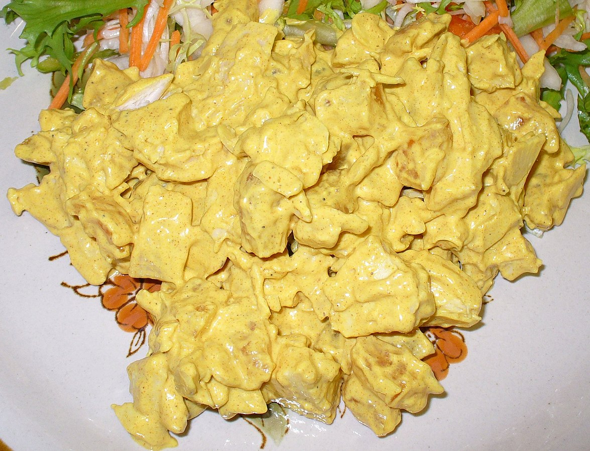

Coronation Chicken

Description
An English dish of chicken in a spiced mayonnaise sauce, usually flavoured with curry powder or paste, can include fresh herbs or other spices with additional ingredients like flaked almonds, raisons, and creme fraiche. Often intended to be eaten cold as a salad or used as a sandwich filling. Created by Constance Spry in 1953 for the coronation of Queen Elizabeth II.
Ingredients
Ingridients obtained from BBC Food recipe of 'Perfect coronation chicken'
- 2 chicken breasts, skin removed
- 1 tbsp olive oil
- 1 unwaxed lemon, zest and juice
- knob of butter
- 1 shallot, finely chopped
- 1 red chilli, deseeded and finely chopped
- 2 tbsp madras curry powder
- 2 tbsp tomato puree
- 100ml/3.5fl oz dry white whine
- 100ml/3.5fl oz chicken stock
- 1 tbsp apricot jam
- 150ml/5fl oz mayonnaise
- 75ml/3fl oz creme fraiche
- 1 large mango, peeled, stone removed, flesh diced
- 4 spring onions, finely chopped
- 2 tbsp finely chopped fresh coriander
- dash of Tabasco sauce
- salt and freshly ground black pepper
- green salad leaves, to serve
- 50g/2oz flaked almonds - toasted lightly dry frying pan, to serve
Steps
Steps obtained from the same BBC Food article.
- Rub the olive oil all over the chicken. Scatter over the lemon zest and season with salt and pepper.
- Steam the chicken for 20-25 minutes, or until cooked through. Set aside to cool.
- Melt the butter in a frying pan, add the shallot and chilli and cook for 5 minutes. Stir in the curry powder and cook for 2-3 minutes. Stir in the tomato purée and cook for a further minute. Add the wine and simmer until the volume of the liquid has reduced by half.
- Stir in the jam and stock, and simmer until the volume of the liquid has reduced by half. Set aside to cool.
- Mix the mayonnaise and the crème fraîche together in a bowl, then stir in the curry dressing. Fold in the mango, spring onions, lemon juice and coriander.
- Cut the chicken into bite-sized pieces. Fold into the curry dressing and season with salt, pepper and Tabasco to taste. Serve with a green salad, and scatter with the toasted almond flakes.